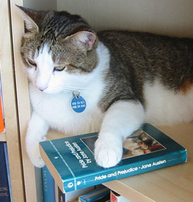

photo / naotakem A kitty named Mr. Darcy snuggling with his Penguin edition of Pride and Prejudice.
You’d think that the people in charge of what the world reads would be able to recognize the works of one of the most popular and most studied authors of all time.


Recent comments